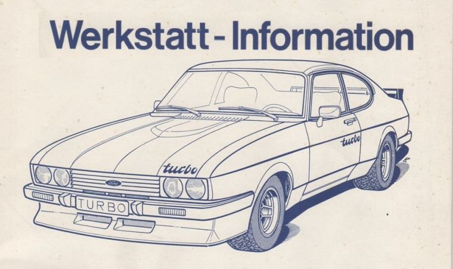

Du besitzt Informationen, Fotos oder Dokumente zum Ford Capri Werksturbo? Dann freue ich mich auf Deine Nachricht.
Jede Ergänzung hilft dabei, das Werksturbo-Register weiter zu vervollständigen und wertvolles Wissen für zukünftige Generationen zu bewahren.
Kennst Du einen Ford Capri Werksturbo oder besitzt Informationen zu einem Fahrzeug? Jede Information hilft dabei, das Register zu vervollständigen.

Gesucht werden Prospekte, Werkstattinformationen, Ersatzteilkataloge, Preislisten oder technische Unterlagen – auch Kopien oder Scans sind willkommen.
Ob historische Aufnahmen, Pressefotos oder aktuelle Bilder – jede Aufnahme trägt dazu bei, die Geschichte des Ford Capri Werksturbo zu dokumentieren.
Hast Du Fragen zum Werksturbo-Register oder möchtest Du Fotos, Dokumente oder Informationen beisteuern? Dann schreibe mir einfach eine E-Mail.
Ich antworte so schnell wie möglich und freue mich über jede Unterstützung.
Jeder Hinweis, jedes Foto und jedes Dokument kann ein wichtiges Puzzleteil sein. Auch wenn Du Dir nicht sicher bist, ob Deine Informationen relevant sind – melde Dich einfach.
Gemeinsam können wir das Werksturbo-Register Schritt für Schritt vervollständigen und das Wissen über dieses außergewöhnliche Fahrzeug dauerhaft bewahren.
Vielen Dank für Deine Unterstützung!